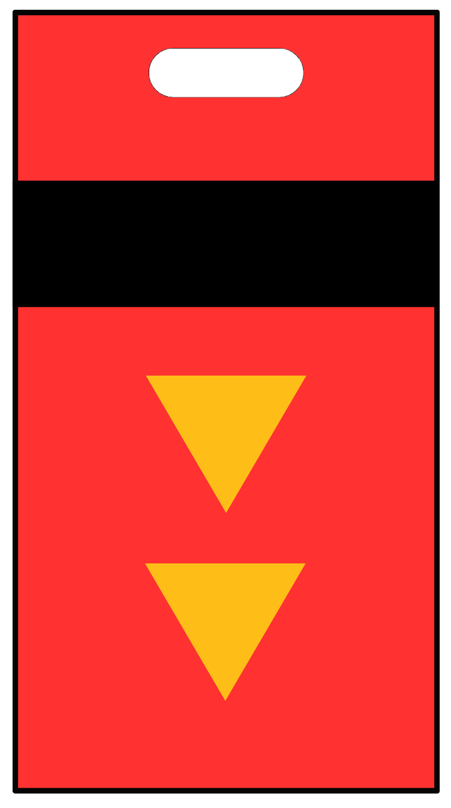
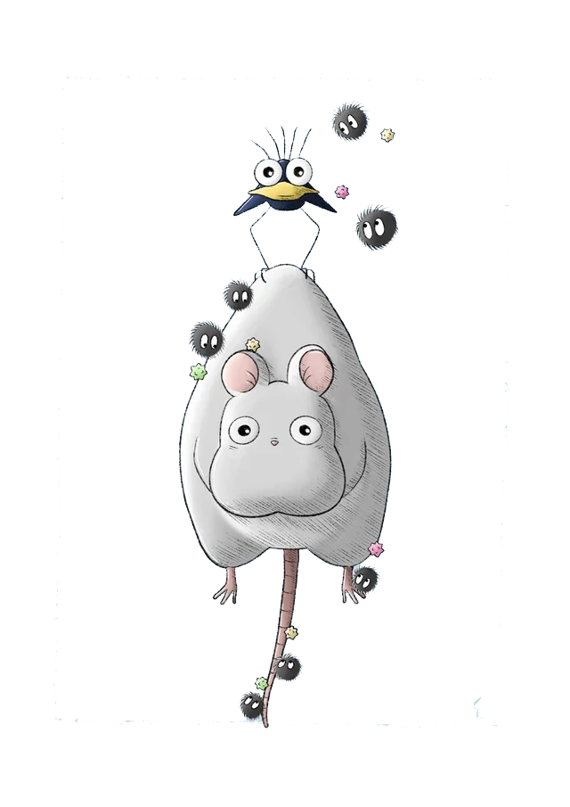

Choose your
Soothing Spirits
(Drag and Drop)
TOKEN 1
TOKEN 2
TOKEN 3
TOKEN 4
TOKEN 5

TOKEN 6

INSTRUCTIONS
Mix up to three soothing spirits.
Each bath token reveals a calming character and their unique lofi tune.
When placed on the stage, the token gently disappears as the spirit appears and music begins.
Once the music stops, the spirit fades away — and the token returns, ready to be used again.
Drag, listen, unwind — and enjoy the harmony.